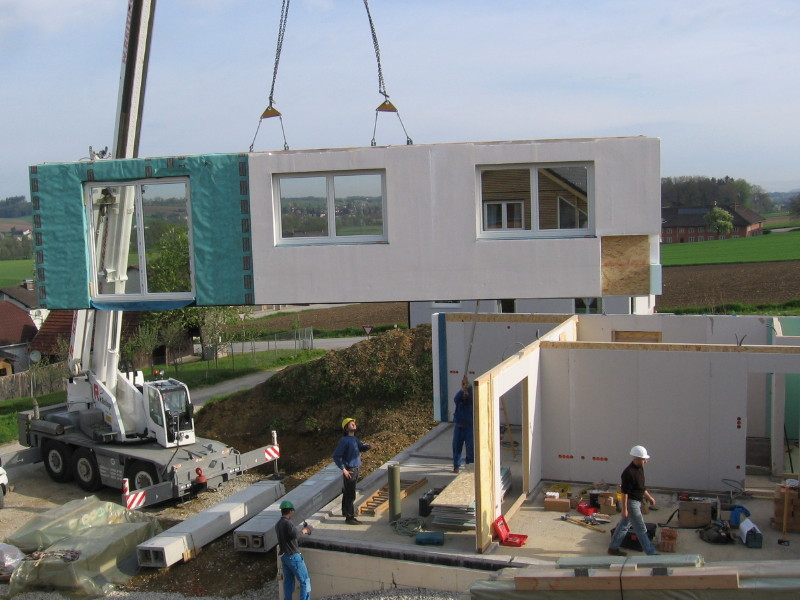

PATRI REALTY · PRÉVIA EDITORIAL · APURAÇÃO 22/10/2026 · NÃO PUBLICADO EM PRODUÇÃO
BIM e inovação: o que deve chegar à operação do condomínio
BIM pode apoiar a organização das informações do edifício. Veja o que pedir na entrega da obra para conectar projeto, documentação e manutenção condominial.

A inovação precisa sobreviver à entrega das chaves
Um comprador costuma conhecer a apresentação visual do projeto antes de conhecer seus documentos operacionais. Nossa proposta é antecipar a pergunta: o que a equipe de gestão receberá e conseguirá usar depois da entrega?
A Estratégia BIM BR, reorganizada pelo Decreto 11.888/2024, busca disseminar o uso de BIM no país. Isso contextualiza a política pública, mas não significa que todo condomínio privado esteja obrigado por esse decreto a adotar a metodologia. [1][2]
O que pedir no pacote de informações
Como lista de negociação, recomendamos cadastro de sistemas, identificação de equipamentos, manuais, garantias e histórico de alterações. Os documentos precisam ter responsáveis, versões e formatos definidos. O conteúdo exato da entrega depende das obrigações aplicáveis e do contrato; a lista aqui é um roteiro editorial de avaliação.
Pergunte como a documentação será atualizada após reformas e substituições. Defina quem terá acesso e como o condomínio recuperará os arquivos se trocar de prestador. A dependência de uma conta pessoal ou de um fornecedor pode comprometer a continuidade do registro.
BIM, pré-fabricação e gêmeo digital não são sinônimos
A pré-fabricação organiza componentes produzidos antes da montagem no local; BIM diz respeito à gestão das informações e aos processos de modelagem. É possível discutir os dois na mesma obra, mas uma fotografia de montagem não comprova como a informação foi gerida. A foto desta pauta ilustra construção pré-fabricada.
Também recomendamos cautela ao anunciar um gêmeo digital. Um modelo estático não demonstra, por si, conexão atualizada com a operação. Peça uma demonstração do uso proposto: localizar um ativo, consultar seu documento e registrar uma intervenção. As diferenças ficam mais claras em uma tarefa do que em uma promessa comercial.
Uma prova simples antes de contratar
Escolha um equipamento representativo e peça que a equipe percorra todo o caminho: identificação, dados técnicos, acesso à documentação e exportação do registro. Verifique o que é entregue ao contratante e o que depende de licença ou assinatura.
Nosso critério editorial para inovação é utilidade demonstrável. Este texto não atribui percentuais de redução de custo ou prazo à adoção de BIM. Para afirmar esses ganhos em uma obra, seriam necessários método, base de comparação e resultados daquela aplicação.
Perguntas frequentes
BIM é apenas um desenho em 3D?
Não. A Estratégia BIM BR trata de modelagem da informação e de sua disseminação na construção. Uma avaliação de contratação deve olhar processos, dados e entregáveis, além da visualização.
O decreto obriga todo condomínio privado a usar BIM?
Não. O Decreto 11.888/2024 institui a Estratégia BIM BR; não deve ser apresentado como obrigação universal para todos os condomínios privados.
O síndico precisa operar um software de projeto?
Depende do arranjo contratado. A entrega deve prever acesso utilizável às informações e responsabilidades claras, sem pressupor que o síndico seja modelador.
Verbetes
- Interoperabilidade
- Capacidade de diferentes sistemas trocarem e utilizarem informações, dentro de formatos e regras definidos.
- As built
- Registro da situação construída; sua utilidade depende da fidelidade e da atualização.
- Gêmeo digital
- Representação digital associada ao ativo e à operação; o termo exige esclarecer conexões, dados e atualização efetivamente disponíveis.
Fontes consultadas
Continue a leitura
- Gestão condominial de alto padrão: o luxo da previsibilidade
- Bosco Verticale: o que avaliar em um empreendimento sustentável
- Sustentabilidade em condomínios: por onde começar
Kit de publicação
- Título SEO
- BIM e inovação: da obra à gestão do condomínio
- Meta description
- BIM pode apoiar a organização das informações do edifício. Veja o que pedir na entrega da obra para conectar projeto, documentação e manutenção condominial.
- Legenda social
- Inovação que termina na apresentação deixa pouco para a rotina do edifício. Veja quais informações pedir na entrega da obra e como avaliar BIM, documentação e manutenção em uma demonstração prática.